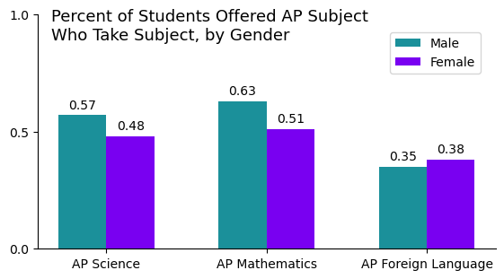
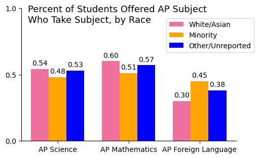
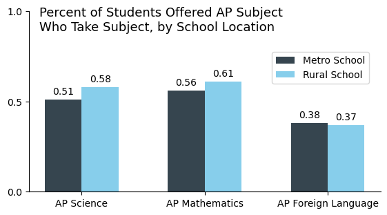
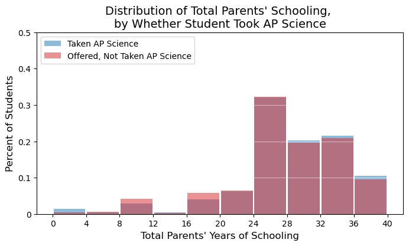
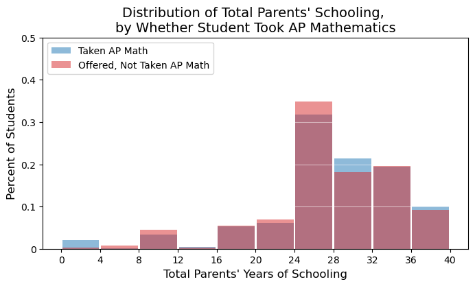
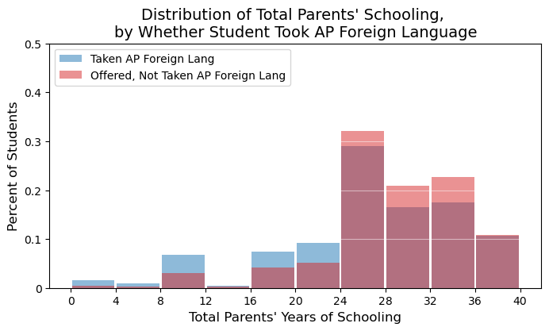

Usage - All Students
Gender
Over 50% of male students offered AP Science took the subject, and the same is true for AP Mathematics. There was about a 10 percentage point deficit between male and female students in these two subjects. However, only about one-third of students offered AP Foreign Language took the subject, and a slightly higher percentage of female students took it than male students.
Race
Approximately the same percentage of white/Asian and other/unreported race students offered AP Science and AP Mathematics took these courses. There was a 5-10 percentage point deficit between non-minority and minority students in these two subjects. This pattern was reversed for AP Foreign Language; nearly 50% of minority students offered AP Foreign Language took the subject, compared to only 30% of white and Asian students.
School Location
There was an approximately 5 percentage point deficit between rural and urban students offered AP Science and AP Mathematics who took these courses, with a higher percentage of students at rural schools taking these courses. These students had less access, so students looking to take the course might have concentrated in schools offering them. There was no deficit for AP Foreign Language.
Parents' Education Level
The distribution of total parents' years of education is close to identical for students taking and not not taking at least one AP Science course.
This distribution is very similar to the distribution for AP Science access.
Interestingly, this distribution is different than the distributions for AP Science and AP Mathematics. The distribution of total parents' years of education is skewed more right for students offered but not taking AP Foreign Language, and the distribution is skewed more left for students taking the subject. This could indicate that parents with more education believed that taking AP Foreign Language was not important.
- Usage for Top Students